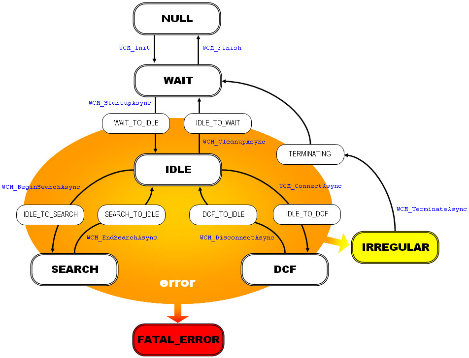
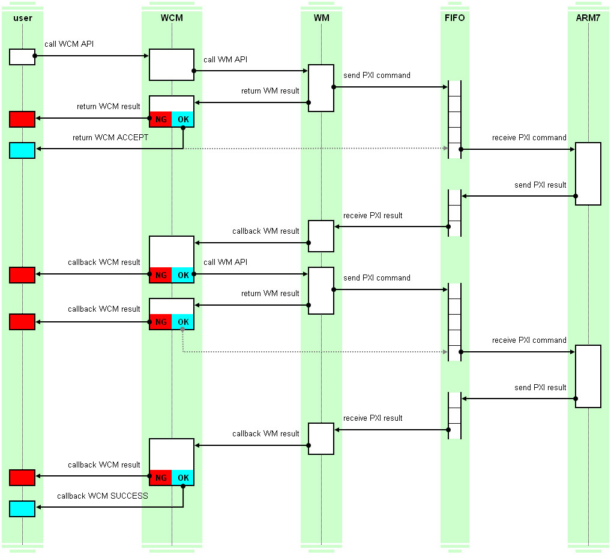

WCM ライブラリは、インフラストラクチャモードでワイヤレス通信を行う際に周辺の無線アクセスポイントを探索する、
無線アクセスポイントと接続・切断する、という機能に特化した WM ライブラリのラッパーライブラリです。
WM ライブラリの状態管理を行いますので、WCM ライブラリを使用中は WM ライブラリ や MB ライブラリを直接使用しないで下さい。
無線アクセスポイントに接続されている状態では、データを送受信する際に CPS ( TCP/IP プロトコルスタック ) ライブラリと無線ドライバとの
橋渡しを行うスタックとして機能します。WCM ライブラリを使用して直接データを送受信するインターフェースは CPS ライブラリのみが使用する
ことを想定しておりますので、API として公開しておりません。ご了承下さい。
また、WCM ライブラリは、無線アクセスポイントと接続されている間に何も通信を行わないと無線アクセスポイントから接続を切断されるという現象を
回避するために、約 1 分間無通信状態が続くと自動的にキープアライブ用の NULL パケットを送信します。
このキープアライブ機能の為に OS ライブラリのアラーム機能を使用していますのでご注意下さい。
WCM ライブラリの状態遷移は以下の図のようになっています。各々の状態は WCM_PHASE_* 定数として定義されています。
各状態の詳細については WCM ライブラリ定数を参照して下さい。
WCM_PHASE_NULL です。WCM_PHASE_IDLE はワイヤレス通信するための準備が整っている状態です。通信はしていません。WCM_PHASE_SEARCH は周辺の無線アクセスポイントを自動的に探索している状態です。自動探索については下記を参照して下さい。WCM_PHASE_DCF は無線アクセスポイントに接続された状態です。この状態の時にのみ実際にインフラストラクチャモードで通信を行うことができます。WCM_PHASE_IRREGULAR はエラーが発生したものの復旧可能な状態です。但し WCM_TerminateAsync 関数による強制停止処理を行うことしかできません。WCM_PHASE_FATAL_ERROR は致命的なエラーの発生により、内部状態が管理できなくなった状態です。復旧は不可能ですので、エンドユーザーに電源断を促す画面表示をする等して下さい。

WCM ライブラリの内部状態を遷移させる API は初期化・終了関数を除くと全て非同期処理を行います。
WCM ライブラリの非同期 API は、返り値には非同期処理を開始することができたかどうかを示す処理結果を返します。
WCM_RESULT_ACCEPT が返された場合には非同期処理が正常に開始されており、処理結果を通知するコールバックが必ず一回発生します。
内部では WM ライブラリの非同期 API を一回から数回連鎖的に呼び出し、最終的な処理結果のみがコールバックで通知されます。
例えば二回 WM ライブラリの非同期 API を連鎖的に呼び出す場合は、以下のような処理の流れになります。

WCM ライブラリでは、WCM_BeginSearchAsync 関数により無線アクセスポイントの自動探索を開始すると、
非同期処理完了通知後も WCM ライブラリ内部で設定に基づいたスキャン処理が自動的に連続して非同期に行われ続けます。
内部状態が WCM_PHASE_SEARCH の時には、API 呼び出しによって開始された非同期処理は行われていない状態ですが、
スキャン処理を内部で連鎖的に行い続けるという非同期処理は行われていますので、不定期に無線アクセスポイント発見通知が発生します。
自動探索におけるスキャン処理は、オプション指定されているチャンネルのリストを小さい番号から一つずつ順番にスキャンしていく方式です。
一番大きい番号のチャンネルまでスキャンし終わると一番小さいチャンネルに戻ってスキャンを続けます。
WCM_StartupAsync 関数に指定する WCMConfig 構造体に、ある程度の探索結果情報退避用バッファを与えておくと、発見通知がコールバックされると同時に
このバッファに ( サイズが許す限り ) 無線アクセスポイントの情報がリストアップされていきます。
また、リストアップされた情報に適切にアクセスする為の API 群が用意されています。
探索結果情報退避用のバッファを与えない場合には、無線アクセスポイント発見通知コールバック内で何らかのバッファに情報を退避して頂く必要があります。
2005/07/22 初版